Un œuf en cristal taillé pour chaque espèce, aux couleurs de l'animal, avec de petits détails qui le rappellent (oreilles, ailes, queue, cornes, tentacules…), et aucun visage. Photos prises dans Studio, rangées dans l'ordre des raretés : de Commun à Secret, puis le Prisme Suprême et les boss.
Déjà branché dans le jeu : la machine à œufs montre maintenant l'œuf de l'espèce sur chaque socle, avec l'aura de sa rareté (version 3) autour.
Refaits après vérification (ils avaient un air de visage) : Chat noir, Chat-licorne (yeux en cœur), Lapin lunaire (masque), Hibou (fente en bouche), Géant (casque de scaphandrier, maintenant enchaîné avec une massue).
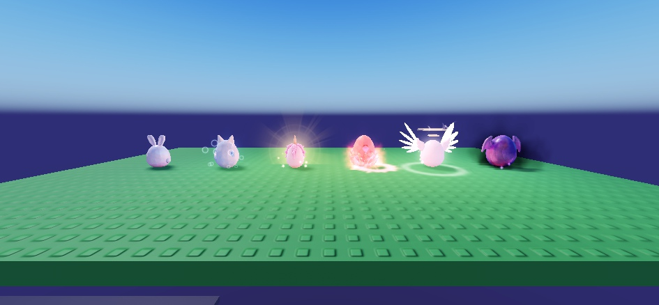
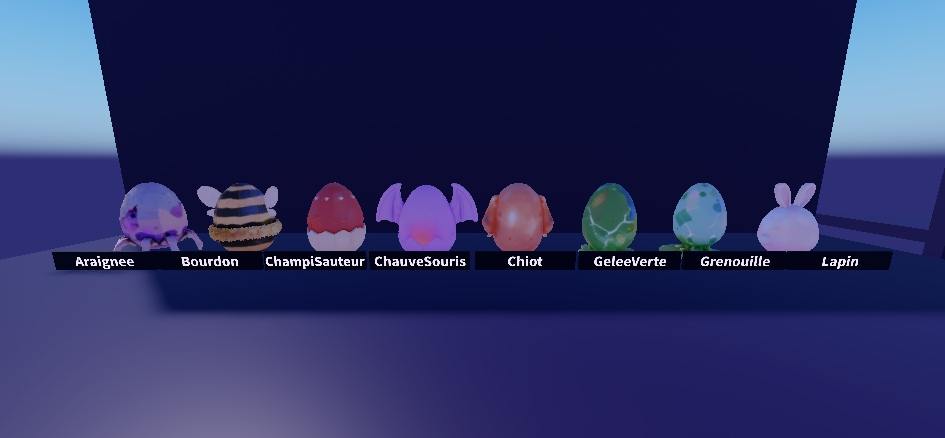
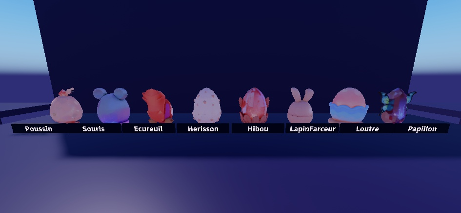
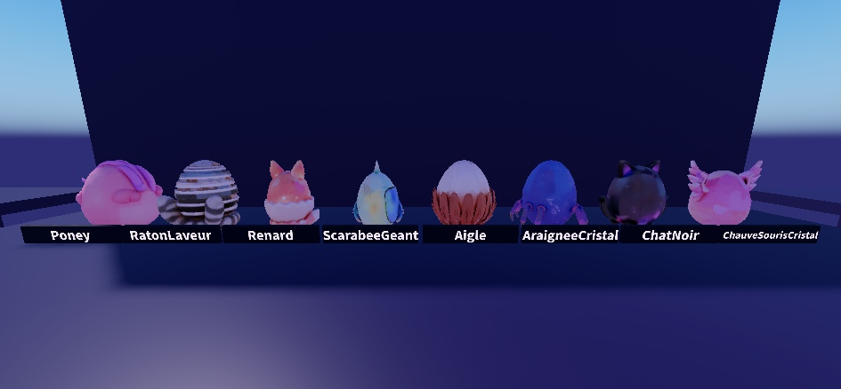
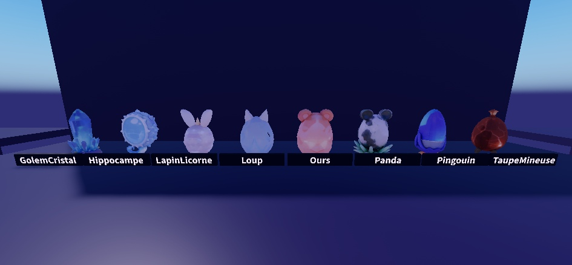
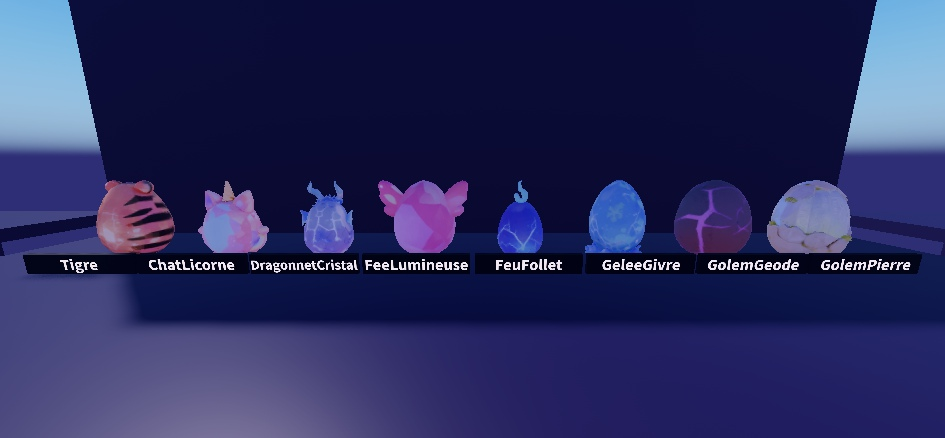
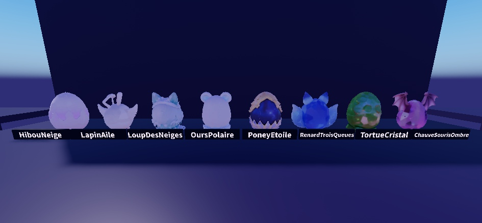
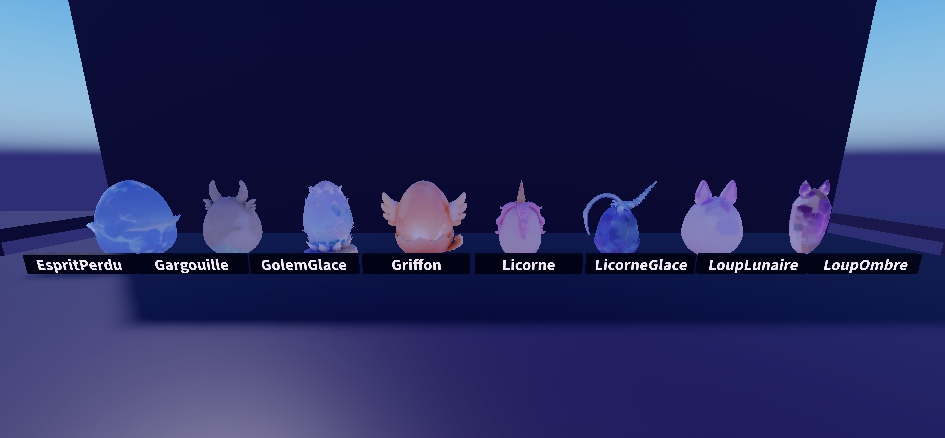
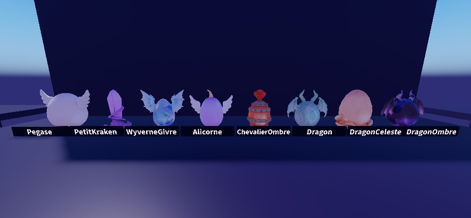
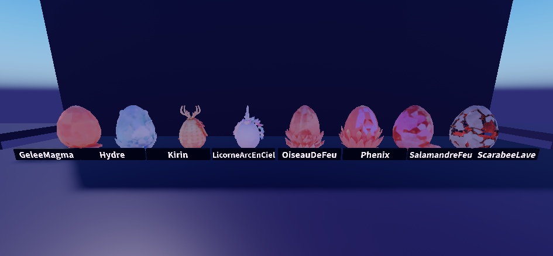
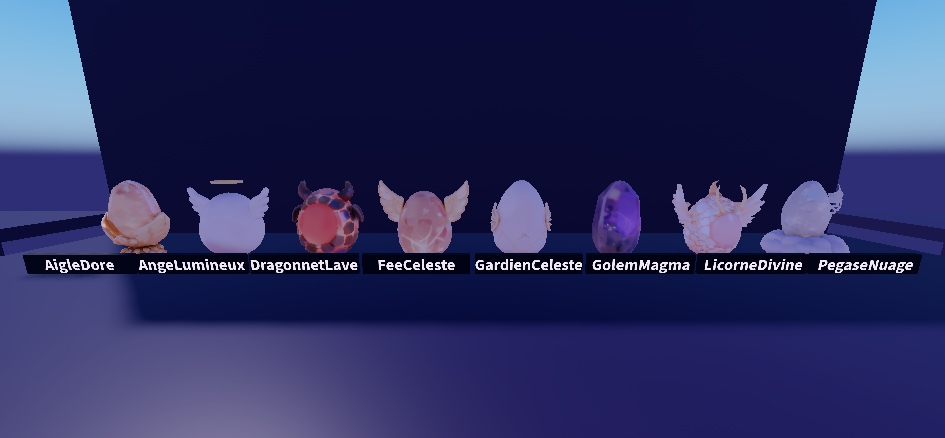
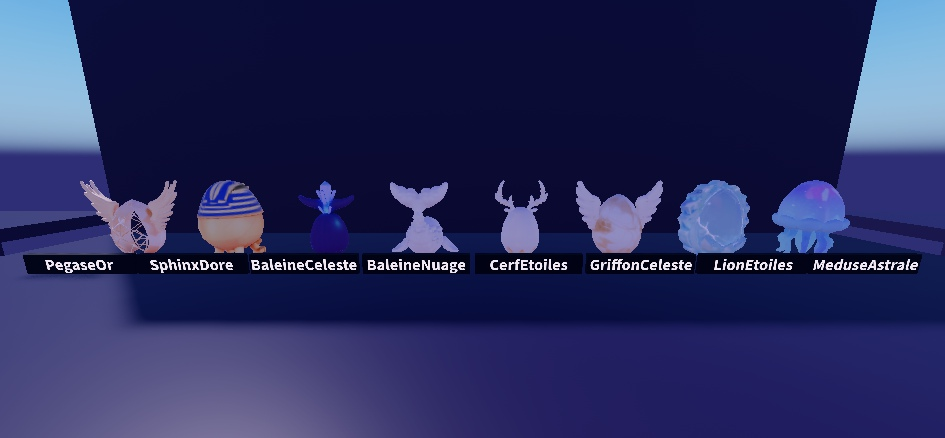
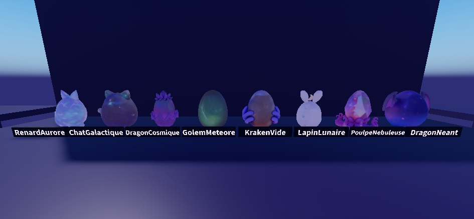
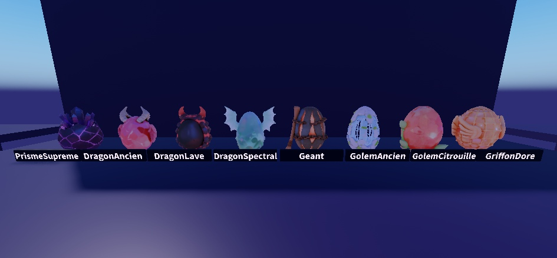
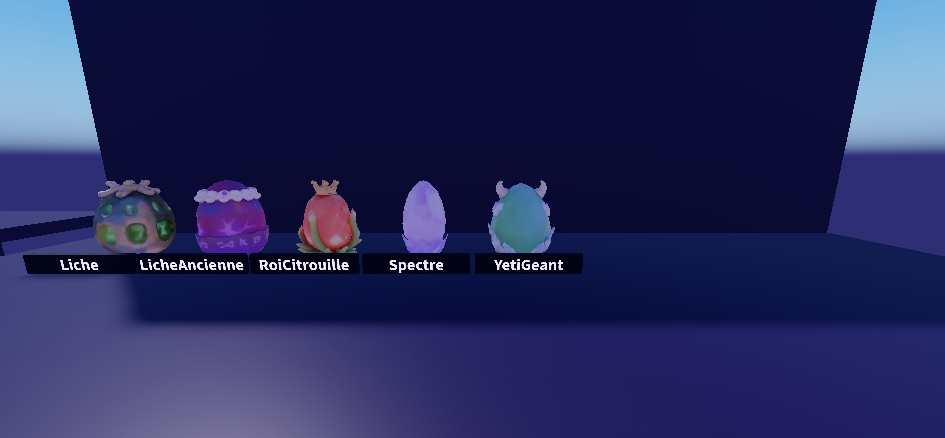
Dis-moi les œufs que tu veux refaire (par leur nom) : je les régénère un par un. L'éclairage des photos est bleuté (fond sombre) ; en jeu, au soleil, les couleurs sont plus vives.